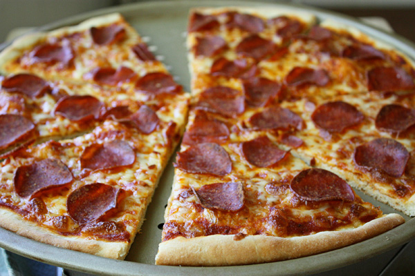

Pepperoni Pizza

Quick, Easy, Delicious home made pepperoni pizza
Ingredients
Pizza Sauce
Pizza Crust
3 1/4 cups. all purpose flour
Toppings
Steps
For Sauce:
1. Combine all sauce incredients with 1/2 cup water in a bowl; set aside while making crust.
For Crust:
1. Combine 2 cups of flour with the yeast, sugar and salt. Add the water and oil and mix until combined.
2. Gradually add remaining flour slowly until a stick dough ball is formed.
3. Knead for 4 minutes, on a floured susrface, until the dough is smooth and elastic. Add flour if needed.
4. Divide dough in half. Pat each half into a 12-inch greased pizza pan
For Pizzas:
1. Preheat oven to 425 degrees F. Top crusts with sauce, pepperoni and cheese.
2. Bake 18-20 minutes until crusts are brown and cheese is bubbly.